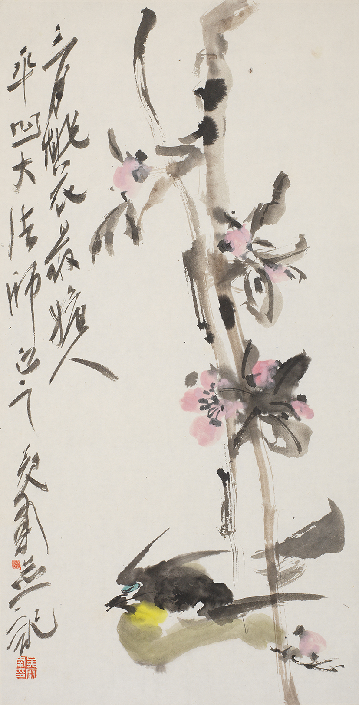
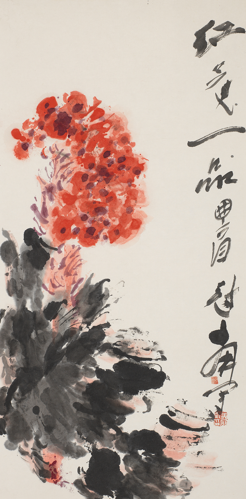

{kind=link}
作家生平
1940年
出生于上海，幼喜丹青。
1956年
4月，响应号召为支边身赴西安的李世南开始了他的业余画家生涯，发表版画、国画、连环画等作品。
1960年
成为西安《金箍棒》漫画学会的主要成员，发表了大量漫画作品。
1961年
创作重点转向国画，这一时期的作品带有明显的素描影响。
1964年
拜何海霞为师，系统学习中国传统绘画。
1971年
经何海霞介绍，师从石鲁。在石鲁的指导下，李世南在写意人物画上取得了重要突破，逐渐摆脱了素描造型观的局限。
1975年
在北京人民美术出版社与著名画家刘继卣、任率英等合作连环画《李自成起义》。在北京期间，大量尝试没骨水墨人物画，这些画在继承石鲁的基础上中西融合，显露出自己的艺术个性，受到北京艺术界多位前辈的赞赏。
1977年
37岁的李世南进西安工艺美术研究所工作，结束了长达19年的业余美术生涯。
1980年
举办了第一个画展"四川、云南写生画展"，就被誉为"长安画派后起之秀"。
1981年
6月《美术》杂志推出两个彩版和一篇创作谈使李世南这位业余画家一夜成名。
1983年
在武汉创作了打破禁忌的《灯系列》和《白屋系列》作品，这些作品充分展现了他对传统与现代融合的探索。
1984年
迁湖北省美协後，在不丢弃传统笔墨趣味的基础上，锐意淙水墨画表现的可能性，由泼墨发展为泼彩、粉墨，融意念于充满奇幻的水墨挥洒之中，笔墨自由奔放，充溢着生命的热情与悲抑，恣意放纵而富抽象意味，表现的潜能得到充分发挥，因此被评论家认为是最具生命意识和表现性质的国画家之一。
1989年
以巨大的创作激情，开始创作大量泼彩人物画和花鸟画，这种独创的表现手法将写意画推向更加自由奔放的境界，自我表现的色彩也更加浓烈，以生、死、爱为主题使李世南作品的基调更加趋向深沉的悲剧性。同年完成作品《贵州印象·岊沙系列》十幅，这组作品以现代意识表现了贵州高原神秘、野性的原始生命力给予画家内心的强烈震憾。皮道坚曾说："他总在不停地否定自己。每每是刚刚被人们接受，他便迫不及待地推翻那个被人接受的自己，全然不顾公众的愤怒与诧异。他渴望超越，不断超越自己也超越曾经给予他许多恩惠的传统。"
1991年
51岁的李世南赴深圳画院。深圳时期，面对黄宾虹对笔墨原则的坚持，对笔墨的存在价值做出的富于独特个性的阐发，李世南认识到中国画现代转型的最佳路子是从中国画自身的发展轨迹寻找通往现代之门。
1997年
对笔墨的重新认识，促使李世南在创作中逐渐摆脱笔墨束缚，抛弃形体的结构关系，作品趋向抽象化，笔墨更强调表现性，也更加凝练。
1998-2000年
1998年开始酝酿，于2000年开始创作的《中国历代高僧图》，就是他这种追求和尝试的成果。108位高僧在他笔下，没有具体形象和神态，色墨自然渗化，浅线勾勒，人物似乎要化入虚空的背景中去。这种空灵宁静意境的营造，符合高僧精神思想的呈现，更强化了作品的内涵，使作品情感和气势相统一，思想和构图相统一，意蕴与内容相统一。泼墨的恣肆洒脱，柔中带刚的造型，体现出了作者笔墨技艺与思想内涵的双重功力。
1950年
5月生于江苏宜兴。
1962年
临摹芥子园画谱开始学画。
1983年
9月于南京举办首次个人画展（南京）。
1984年
参加首届全国花鸟画邀请展（江西）。
1990年
12月参加全国第五届花鸟画邀请展（武汉）。
1995年
于上海美术馆举办个人展览，作品《桃花》为上海美术馆收藏（上海）。论文集《画余杂稿》出版；大型画集《吴冠南画集》出版（北京）。开始研究"山水花鸟相结合"的独自画法。
1996年
开始研究"构成"与"重彩"写意花鸟画画法。
2000年
5月参加"新中国画"大展提名展览（上海）。大型画集1—4卷《纸上栽花集》出版。
2001年
12月参加成都国际艺术学术提名双年展（四川成都）。吴冠南艺术研究文集《天意》出版（天津）。
2003年
参加中央美院《水墨本色》学术提名展（北京）。12月参加文化部、中国画研究院《东方之韵》中国画学术提名展（北京）。
2004年
《重彩画法》、《构成画法》由山东人民美术出版社出版。8月参加中国艺术研究院，中国画研究院，黄宾虹奖得奖作品展（北京）。调入江苏省国画院。10月参加中国艺术研究院，中华文化画报社举办的中国画名家学术提名展（北京）。11月参加由江苏省人民政府，江苏省国画院举办的首届"水墨传媒三年展"获傅抱石奖（南京）。《吴冠南小品、短文合集》由山东人民美术出版社出版。
2005年
10月作品"九霄飘香"随神舟六号飞船进入太空，并由国家博物馆收藏。8月参加由中国美协、中国文联、国家画院、中国美术馆联合举办的首届《当代中国画学术论坛》。12月参加文化部艺术司年度学术提名展（北京）。12月参加中国画研究院2005年度提名展（北京）。
2006年
1月《吴冠南画集》出版。5月《中国当代水墨图像档案》吴冠南卷出版（浙江）。11月参加中国美协、中国美术馆等举办的《世纪风骨》学术双年展（北京）。11月《当代名家系列》吴冠南卷出版（河北）。
2007年
3月作品收入《中国美术大事记》（北京）。11月文献集《一方水土，一代画人》吴冠南卷出版（北京）。
2008年
1月国家画院主编，河北美术出版社出版"画品从书"大型文献《吴冠南卷》。4月参加河南省博物馆中国十名家精品展。5月编入中国文联出版社出版的《当代中国画坛四十家》。9月编入中央美术学院、人民美术出版社出版的《50年代50家》大型美术文献集。9月编入湖北美术出版社出版的《二十一世纪最具升值潜力画家》画集。9月四川美术出版社出版《六十留痕》吴冠南精装画集。
2009年
5月作品入编山东人民美术出版社《百年中国画经典》。8月作品参加中国文联第三届"当代中国画学术论坛"。9月《百年中国画经典》吴冠南卷由山东人民美术出版社出版。9月由北京人文艺术出版社出版著名画家书法集《吴冠南卷》。11月湖北美术出版社出版中国当代著名画家作品集《吴冠南卷》。
2010年
5月湖北美术出版社《中国当代名家丛书》吴冠南卷。
2011年
12月作品参加由中国美术家协会与葡萄牙东方基金会共同主办的"水墨中国：中国当代国画精品展"（里斯本，葡萄牙）。
2012年
5月四川美术出版社出版《亦画亦说——吴冠南文·画合集》。5月江西美术出版社《吴冠南访谈录：花鸟卷》。11月作品参加由中国美术家协会、荣宝斋基金和柏林中国文化中心共同主办的"中国美术世界行—中国当代美术作品展"（柏林，德国）。
2013年
3月美术报吴冠南艺术研究中心出版《花荫说艺》。5月作品参加由中国美术家协会、中国驻科特迪瓦大使馆、科特迪瓦文化和法语国家事务部共同主办的"走进西非—当代中国画精品展"（阿比让，科特迪瓦）。5月美术报"吴冠南艺术研究中心"成立，同时第一届吴冠南大写意花鸟画高研班全国招生并开班授课。
2014年
4月由江苏省国画院、苏州市囯画院主办，青藤艺术协办的"写意思——吴冠南夏回中国画作品展"在苏州美术馆开幕。7月美术报第二届吴冠南大写意花鸟画高研班开班授课。
2015年
4月参加洛阳荣宝斋举办的《十分春色》全国画家提名展。5月参加由《中国画艺术年鉴》、《中国艺术家年鉴》、当代中国画艺术生态研究所主办，青藤书画艺术研究院协办的"天地文心——2015年吴冠南、杨春华、李江航中国画作品发布暨《中国画艺术年鉴》学术邀请展"。10月参加由青藤文化、竹轩雅主办的"意到情适——回望青藤白阳"中国花鸟画大家八人展。11月参加人民日报海外版在全国政协礼堂举办的"国风·文脉——名家书画展"。11月美术报第三届吴冠南大写意花鸟画高研班开班授课，同时被重庆大学艺术学院聘为客座教授及硕士研究生导师。
2016年
1月参加由中央美院中国画学院、今日美术馆、中国艺术家年鉴共同主办的"水墨国度——中国艺术家年鉴文献展"。5月参加由中国美术馆、江苏省文化厅在中国美术馆举办的"金陵风骨 其命惟新——江苏省国画院60年·中国画书法作品展"。12月4日被陕西国画院聘为名誉院长。
大家评语
艺术资讯

吴冠南30幅作品欣赏：气势磅礴，笔意放逐

见到吴冠南先生书法，仍感觉心里一颤